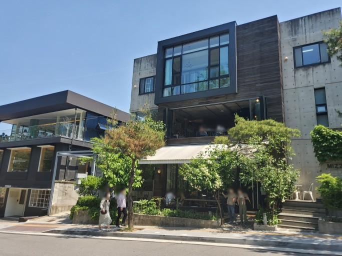

북서울 꿈의 숲
'북서울꿈의숲'은 벚꽃길과 단풍숲 등의 생태적 조경 공간, 대형연못인 월영지와 월광폭포 등의 전통경관, 그리고 북한산과 도봉산, 수락산을 한눈에 볼 수 있는 49.7미터의 전망대와 다양한 장르의 고품격 문화예술이 일년내내 펼쳐지는 '꿈의숲아트센터' 등의 공연장과 전시장, 레스토랑, 전망타워 등이 있는 서울을 대표하는 세계적인 공원입니다.
`

솔밭근린공원
가볍게 산책하기 좋은곳 1000여 그루의 소나무로 이루워짐 그 밖게도 문화놀이마당. 어린이놀이터, 배드민턴장, 바둑장기쉼터, 쌈지마당, 노송마당, 야외씨름장, 예솔마당, 생태연못등의 시설이 있다

박을복 자수 박물관
북한산 자락의 위치한 박을복 자수 박물관은 박은복 선생의 옛집을 리모델링 해서 만든 전시공간이다

419 카페거리
사방이 북한산, 도봉산, 수락산, 불암산으로 둘러싸여 있어 주변 경치가 정말 좋고 3층 건물로 규모가 큰 카페들이 있는 거리
강북구 맛집

비바서울
서울특별시 강북구 노해로8가길 49
분위기 좋은 이탈리안식당

김밥은
서울특별시 강북구 한천로 1016
유부와 곤약이 재료로 들어간다는 김밥집

다정도병인양
서울특별시 강북구 4.19로 41-1
한옥느낌의 인테리어에 전통차를 파는곳

장수마늘보쌈
서울특별시 강북구 덕릉로 192
고기 식감 짱이고 마늘과 조화가 잘 어울린다는 이곳

삼청동샤브 에피소드수유838점
서울 강북구 도봉로 315 1층 R107호
1인샤브 가능한 깨끗한 집

지동닭갈비 본점
서울 강북구 도봉로102길 60-7
수유역 맛집 우이천 앞 깔끔한 닭갈비